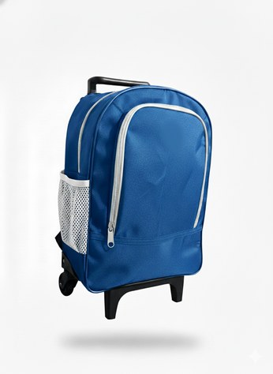

Ata na mão,
prazo em contrato,
responsável
com nome
Cada solução já está registrada em ata homologada. Sua equipe adere, recebe a documentação pronta e a Atto entrega, monta e treina.
A adesão dispensa novo processo licitatório, mas não dispensa análise: depende da ata aplicável, da autorização do órgão gerenciador, da vigência e da disponibilidade de saldo. Nós devolvemos o projeto com valores, prazo e a minuta pronta para a sua área técnica avaliar.
Quem somosCompre por adesão,
sem nova licitação
Vinte e quatro atas vigentes, da sala sensorial ao mobiliário da guarda municipal. Cada card abre a ata de origem com a composição completa.
Toda escola UNIFORMIZADA com a cara DO MUNICÍPIO
Do tênis à meia
antiderrapante
Uniforme, mochila e kit de material com a identidade do município. Grade fechada por escola e entrega antes do primeiro dia de aula.
Ver a ata Dezenove peças entre roupa,calçado e mochila
- 19 itensna mesma ata
- Grade fechadapor escola
- Brasãodo município

Mochila com rodinhas Alça telescópica e bolso lateral Ver na ata541 itens,
um por um
Nada de catálogo genérico: cada item do portal foi lido da ata de origem, com foto própria, especificação e o link para o documento que o registra.
Ver todos os produtos
Sua equipe adere.
A gente entrega, monta e treina.
Sem abrir novo processo licitatório e sem custo para montar o projeto.
Conte a realidade
do município
A equipe analisa a demanda, indica a ata compatível e devolve o projeto com valores, prazo e documentação de adesão.
- Resposta com a ata compatível e a minuta de adesão
- Ficha técnica e certificações para a área técnica
- Sem compromisso e sem custo de projeto